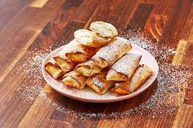

Cheesecake Egg Rolls

Description
Crazy egg rolls are kind of our thing and we love this cheesecake version.
The strawberry dipping sauce is mandatory because it is so good.
Ingredients
For the sauce
- 2 c.chopped strawberries
- 2 tbsp. water
- 2 tbsp.granulated sugar
For the eggrolls
- 2 (8-oz.) blocks cream cheese, softened
- 1/2 c.granulated sugar
- 1/2 c.sour cream
- 1 tsp. pure vanilla extract
- Pinch kosher salt
- 12 eggroll wrappers
- Vegetable oil, for frying
- Powdered sugar, for garnish
Steps
- In a small sauce pan over medium heat, combine strawberries, water, and
sugar. Stir to combine and bring to a simmer. Stirring frequently,
cook until thick and jammy, 3 to 4 minutes. Transfer to a medium bowl and set aside.
- In a large bowl, combine cream cheese with sugar, sour cream, vanilla,
and kosher salt. Using a hand mixer, beat ingredients until fully combined.
- Place an egg roll wrapper on a clean surface in a diamond shape and spoon approximately
3 tablespoons cream cheese mixture into a line in the center. Fold up bottom half and
tightly fold in sides. Gently roll, then seal fold with a couple drops of water.
- In a large skillet over medium heat, heat oil (it should reach 1" up the
side of pan) until it starts to bubble. Add egg rolls and fry until
golden, 1 minute per side. Transfer to a paper towel-lined plate to cool slightly.
- Dust with powdered sugar and serve with strawberry sauce.
Other recipes